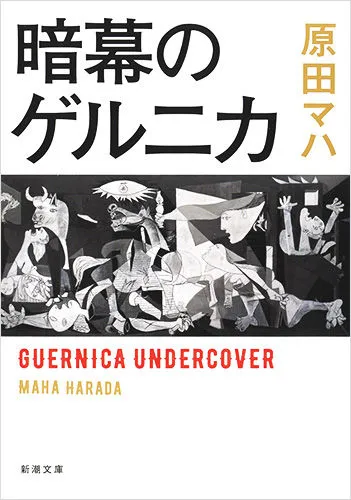

ニューヨーク、国連本部。イラク攻撃を宣言する米国務長官の背後から、「ゲルニカ」のタペストリーが消えた。ＭｏＭＡのキュレータ ー八神瑤子はピカソの名画を巡る陰謀に巻き込まれていく。故国スペイン内戦下に創造した衝撃作に、世紀の画家は何を託したか。ピカソの恋人で写真家のドラ・マールが生きた過去と、瑤子が生きる現代との交錯の中で辿り着く一つの真実。怒濤のアートサスペンス！

ニューヨーク、国連本部。イラク攻撃を宣言する米国務長官の背後から、「ゲルニカ」のタペストリーが消えた。ＭｏＭＡのキュレータ ー八神瑤子はピカソの名画を巡る陰謀に巻き込まれていく。故国スペイン内戦下に創造した衝撃作に、世紀の画家は何を託したか。ピカソの恋人で写真家のドラ・マールが生きた過去と、瑤子が生きる現代との交錯の中で辿り着く一つの真実。怒濤のアートサスペンス！
#オンライン反戦読書デモ0719

#オンライン反戦読書デモ0719

#オンライン反戦読書デモ0719 最近買ったのだけど、今読むに良い本だった。9.11の後の傷ついたキュレーターの奮闘と、ゲルニカを作成する前後のピカソのストーリーが代わる代わる書かれる中で、芸術に何ができるのか？私達はどのように戦うのか？が問いかけられていると感じる。しみる物語だった。